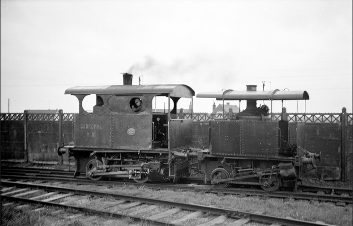

Histoire
JOHN COCKERILL
En 1917 le britanique John Cockerill a 27 ans. Il achete pour 45 000 francs l'ancien château des Princes-Evêques à Seraing. En 1820, il demande un permis pour son premier haut-fourneau au coke. Il achète ensuite un charbonnage. Dans ses usines, derrière le château il emploie 3000 ouvriers. Il fabrique des locomotives, des moteurs à vapeur pour les filatures et des bateaux. Fin des années 1830, ses affaires vont mal et il meurt à Varsovie en 1942. A sa mort, l'entreprise souffre d'un problème de gestion. Ses héritiers bénéficiaires, soutenus par le gouvernement belge, créent la Société anonyme John Cockerill dont la finalité est l'exploitation et la remise sur rail des établissements à Seraing et Liège. Les affaires reprennent vite, poussées par l'expansion des réseaux de chemin de fer, les productions du domaine militaire et le développement des chantiers navals qui voient l'avènement des bateaux à coque métallique actionnés par des machines à vapeur
LA CIMENTERIE DE DANNES
En 1881, Monsieur Henri CUVELIER-CHARVET, fondateur de la cimenterie, suivait depuis longtemps les progrés de cette industrie et prévoyait l'extention d'avenir de l'emploi des ciments. Il est à la recherche de nouveaux gisements et après de multiples sondages, découvrit à DANNES, commune située sur la grande ligne de chemin de fer CALAIS-BOULOGNE-PARIS ( entre BOULOGNE et ETAPLES) des gisements de marne d'une qualité exceptionnelle. De plus, la quantité disponible était pratiquement inépuisable. Il constitue alors une société qui prit la dénomination de "Société ANONYME DES CIMENTS DE DANNES" avec la marque "PORTLAND COURONNE". Dés l'année 1883, il construisit et mit en route une vaste usine avec douze fours droits.
Après de multiples démarches auprès de la Compagnie du Nord, il obtient l'ouverture d'une gare, celle de Dannes-Camiers
L'usine au début des années 60. On y voit la Couronne n°18 manoeuvrer une rame de wagons (si si cherchez bien).
Photo aérienne prise de nos jours de la cimenterie reprise par le groupe EQIOM
LA COURONNE N°18
La cimenterie de Dannes est munie de fours alimentés en charbon. Ce dernier est reçu par trains, les wagons sont ensuite acheminés dans l’usine par une locomotive de manœuvre qui a été acquise auprès d’un fabricant de locomotive Belge. C’est une Cockerill de type III.
En 1926, une deuxième locomotive est acquise auprès du même fabricant, elle sera beaucoup plus puissante que la première, ce sera la Couronne n°18, une Cockerill type V. Elles sont les plus puissantes de la série.
Elle sera ensuite placée en 1992 en monument dans l’usine devant un des voussoirs du Tunnel sous la Manche. Depuis elle a donc subi les intempéries et l’air marin au détriment de sa carrosserie qui doit aujourd’hui être remplacée.